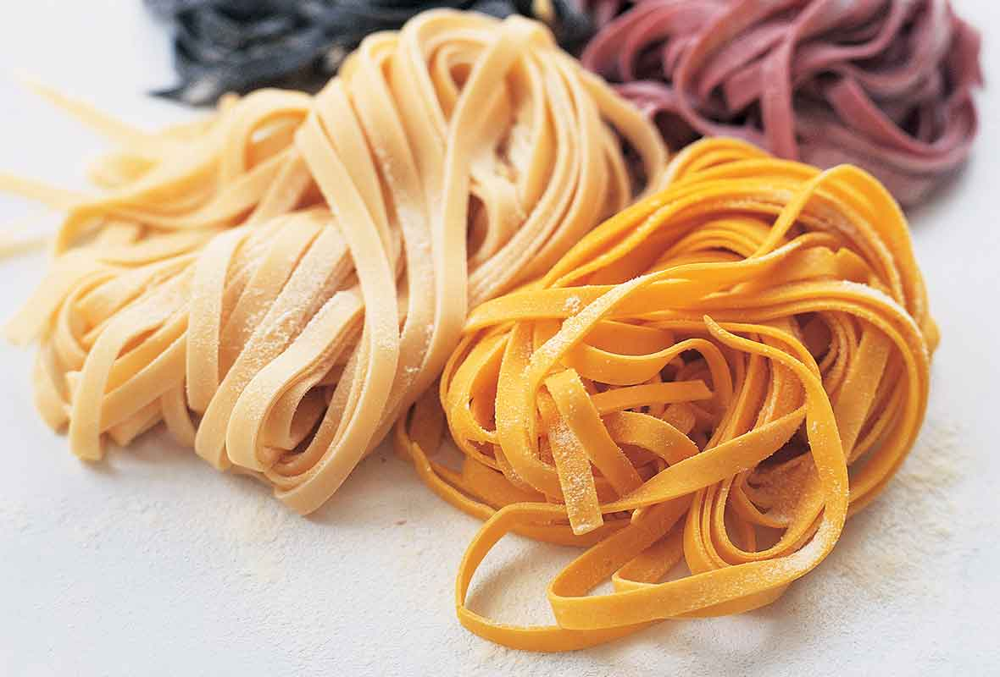
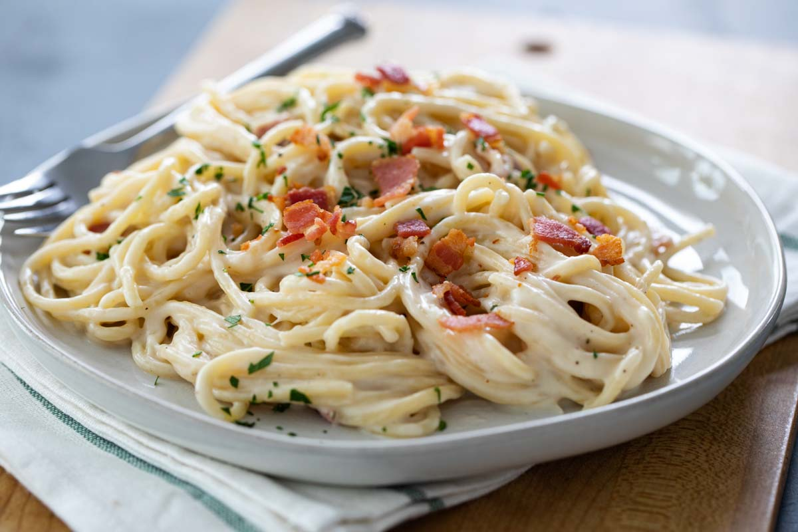
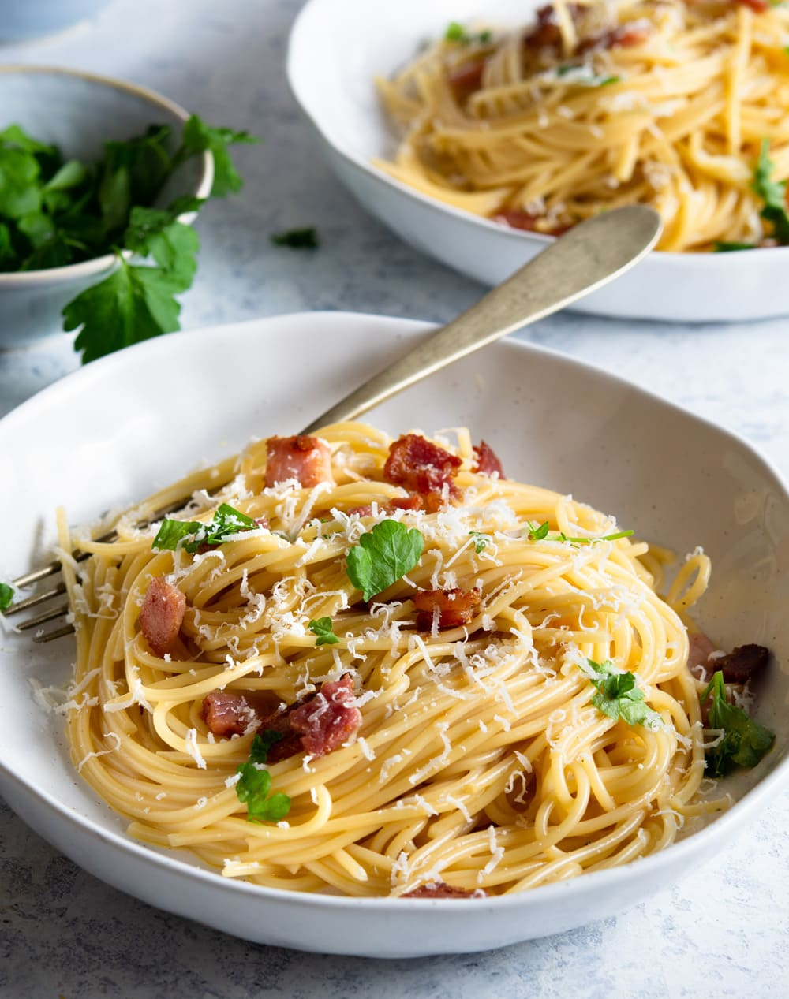
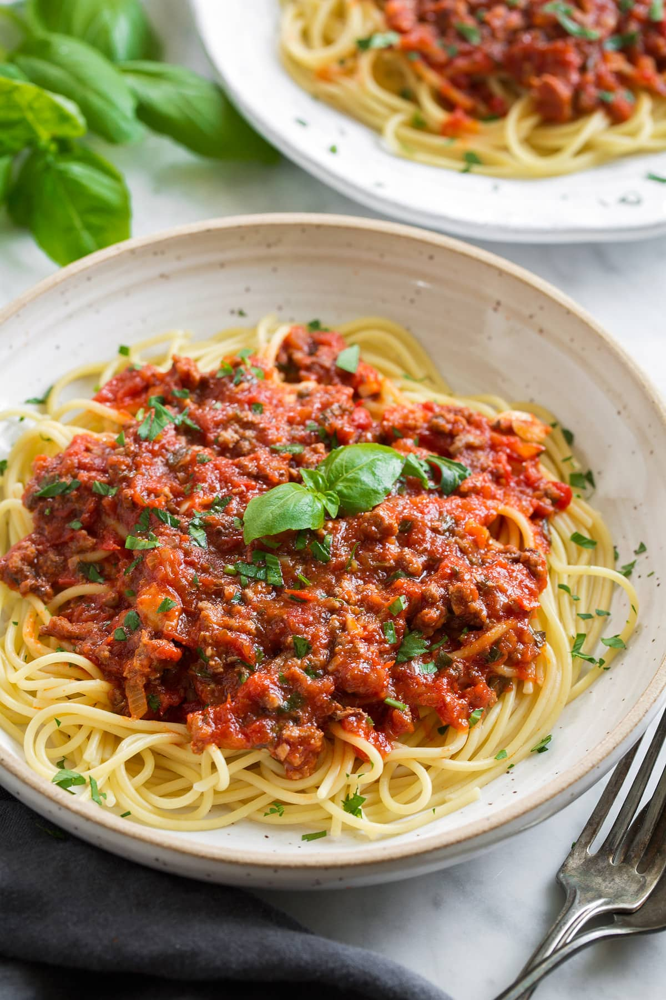

All about Spaghetti
The history of pasta can very from historian to historian. Some may suggest that the pasta comes from the time of the Talmud in the 5th century. Others may believe it originated in China where Marco Polo brought back the knowledge of it to Venice. Either way, pasta is a versatile base that can be dressed up in many different ways.
  Spaghetti
Spaghetti is a form of pasta cut and shaped a certain way. This pasta can be accompanied by various sauces such as marina, alfredo, or carbonara sauce. Marina sauce is a tomato base sauce, spiced with fragrant herbs. Alfredo is a silkier, creamy sauce that works well with any addition. Carbonara is an exquisite sauce as it has a balance of being creamy, rich, and salty So go out there and explore all the different sauces of the world. Or not if you are unable to eat gluten or just have a hard time finding a good gluten-free pasta. May pasta be the savior of your life of harbringer of demise. To which pasta will decide your fate.